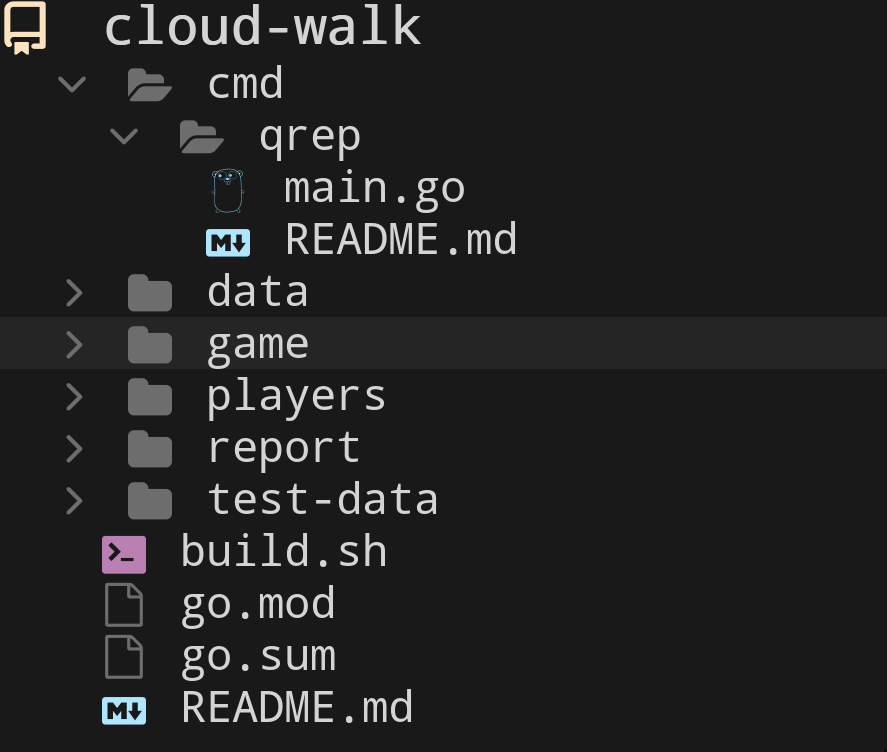
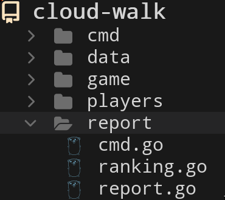
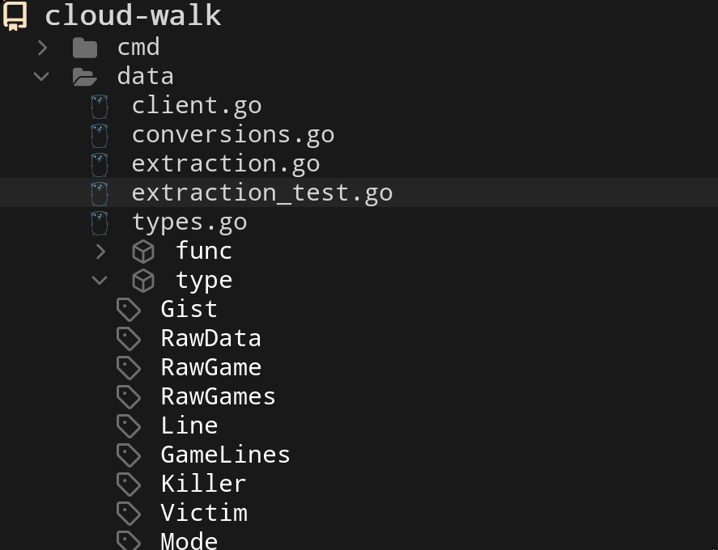
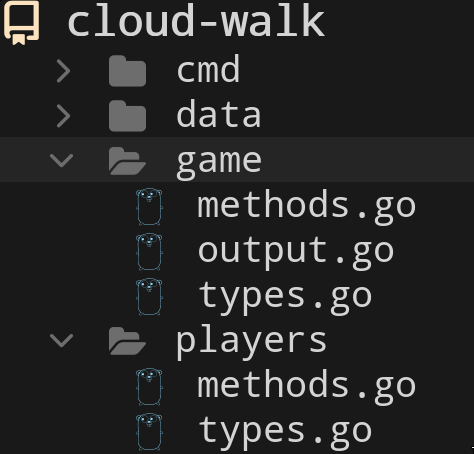
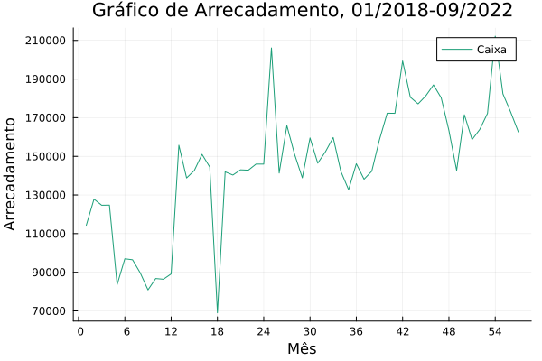
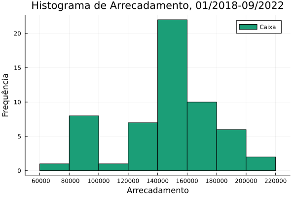
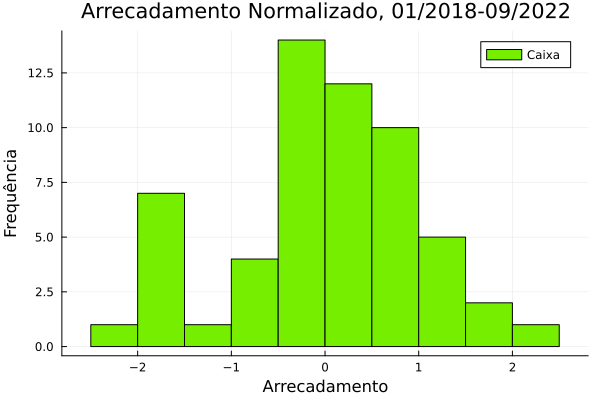
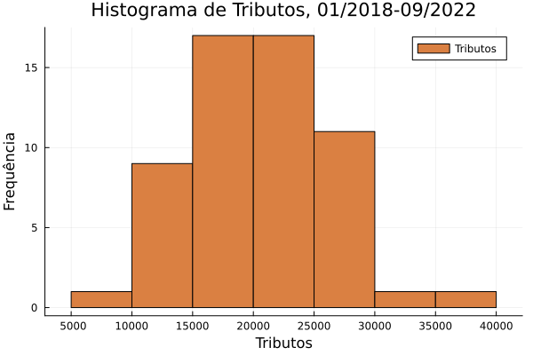
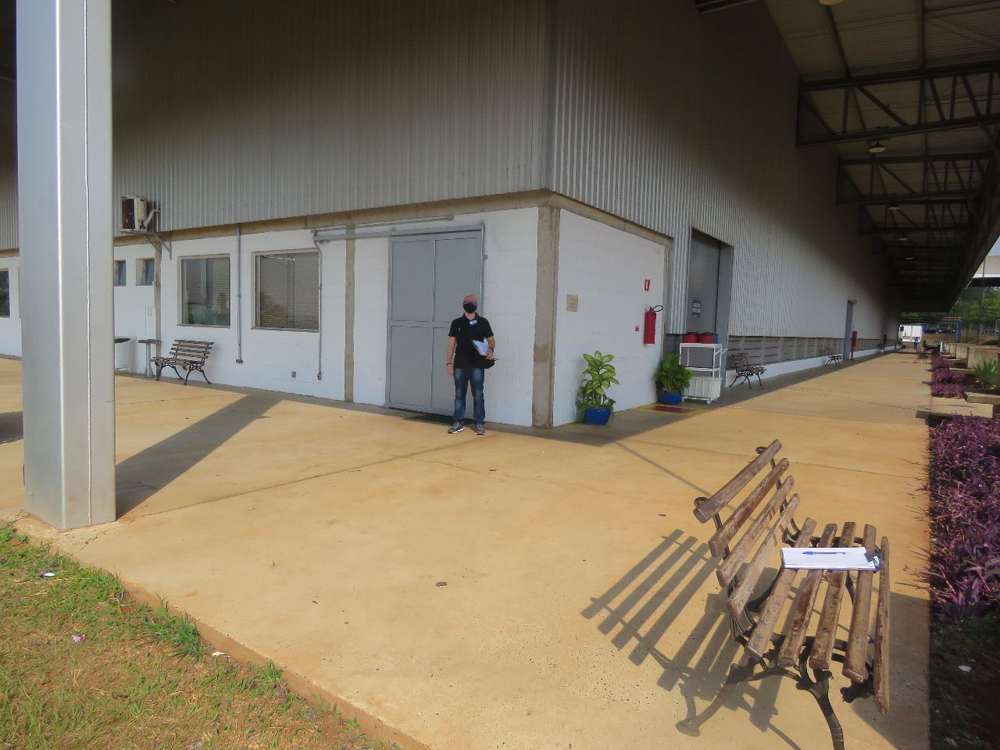

Case: Quake Report
Pedro G. Branquinho
Entry point
/cmd/qrep/main.go
Tree view

Code
package main
import report "github.com/BuddhiLW/cloud-walk-techtest/report"
// tree grown from branch
func main() { report.Cmd.Run() }
report Command
A Bonzai-branch command
Tree view

Structure Z.Cmd (Main branch)
Metadata and Commands
var Cmd = &Z.Cmd{
Name: `qrep`,
// (...) Meta-data
// Summary: `Quake Report: A Bonzai composite command tree, for generating Reports for Cloud Walk technical test`,
Commands: []*Z.Cmd{
// standard external branch imports (see rwxrob/{help,conf,vars})
help.Cmd, conf.Cmd, vars.Cmd,
// local commands (in this module)
ReportCmd,
},
// More meta-data
Description: `(...)`,
}
Structure Z.Cmd (Leaf)
var ReportCmd = &Z.Cmd{
Name: `report`,
Aliases: []string{`data`},
Usage: `<number>`,
Summary: `*data*, or *report*, is the root of the quake-report binary-tree.`,
NumArgs: 0,
Commands: []*Z.Cmd{help.Cmd, RankCmd, StatisticsCmd},
//
Call: func(_ *Z.Cmd, args ...string) error {
// Terminal-client interface logic
},
}
Call (Cli-interface programming)
Call: func(_ *Z.Cmd, args ...string) error {
// Terminal client interface logic
if len(args) == 0 {
log.Print("Displaying all matches, in JSON format")
g.GameOutput()
return nil
} else {
log.Print("Match chosen: ", args[0])
// Parse as int
n, err := strconv.Atoi(args[0])
if err != nil {
log.Fatal(err)
}
if n >= 1 {
_ = g.GameOutput(n)
} else {
log.Fatal("Invalid Match number. Must be greater or equal to 1.")
}
return nil
}
}
Data fetching and parsing
Tree view

Data fetch (client.go)
Gist
func (g Gist) ReadGist() RawData {
resp, err := http.Get(g.url())
if err != nil {
panic(err)
}
defer resp.Body.Close()
body, err := io.ReadAll(resp.Body)
if err != nil {
panic(err)
}
var rawData RawData = RawData(body)
return rawData
}
Local file (for tests)
func (path Path) ReadFile() RawData {
content, err := os.ReadFile(path.String())
if err != nil {
panic(err)
}
return RawData(content)
}
Data Parsing (conversions.go)
RawData to RawGames
func (r RawData) ToGames() RawGames {
dataBySplit := RawGames{}
splits := strings.Split(r.String(), "------------------------------------------------------------")
for _, v := range splits {
// has regex =InitGame:= or not -- determine if it's a game
if strings.Contains(v, "InitGame:") {
dataBySplit[gameCount] = RawGame(v)
}
}
return dataBySplit
}
RawGame to Lines
func (rg RawGame) ToLines() []Line {
var lines []Line
for _, v := range strings.Split(rg.String(), "\n") {
line := Line(v)
lines = append(lines, line)
}
return lines
}
Data Extraction (extraction.go)
Create the list of players
Given a parsed game data, extract the players of that match.
func (lines GameLines) Players() *p.Players {
players := p.NewPlayers() // map[string]p.Player{}
// Extract players from the lines
for _, v := range lines {
if v.HasPlayer() {
playerName := v.ExtractPlayer()
if !containPlayer(players, playerName) {
player := p.NewPlayer(playerName)
players.AddPlayer(player)
}
}
}
return players
}
Count kills (mutate players struct)
func (lines GameLines) Kills(players *p.Players) {
for _, v := range lines {
if v.HasKill() {
killer, killed, action := v.ExtractAction() // killer, killed, action
player := (*players)[killer.String()]
player.AddKill(killed.String(), action.String())
}
}
// Count total kills, for each player
for _, p := range *players {
p.Kills = p.Victims.CountKills()
}
}
Game, Player and Encoding Abstraction
Tree view

Logic (types)
Game
type Game struct {
Players player.Players
}
Player
type Player struct {
Name string `json:"name"`
Kills int `json:"kills"`
Victims Victims `json:"victims"`
}
type Players map[string]*Player
type Victims map[string]Ways
type Ways map[string]int
Encoded Game (easy outputting)
type EncodeGame struct {
TotalKills int `json:"total_kills"`
Players []string `json:"players"`
Kills Kills `json:"kills"`
}
type Kills map[string]Kill
Ranking
type Rank struct {
Name Name `json:"name"`
Kills int `json:"kills"`
Position int `json:"position"`
}
type GameRank map[Name]*Rank
Methods
“Encoding”
Consider the boundary rules or business logic for Report functionality.
// Boundary rules for the game
// 1. If the killer is "<world>", the kill is subtracted from the victim
// 2. All kills by "<world>" are added to the total kills, normally
// 3. "<world>" must not be listed as a player
func (g *Game) NewEncodeGame() *EncodeGame {
totalKills := 0
killMap := Kills{}
playerNames := make([]string, 0, len(g.Players)-1)
for name, p := range g.Players {
if name == "<world>" {
// Conform to the counting rules 2 and 3.
// -------------------------------------------
totalKills += p.Kills
} else {
// Add player to the list of players
playerNames = append(playerNames, name)
totalKills += p.Kills
// Conform to the counting rule 1.
// -------------------------------------------
// Consider <world> kills into the calculation
// of the player's kills (score)
killMap[name] = g.countKills(name)
}
}
return &EncodeGame{
TotalKills: totalKills,
Players: playerNames,
Kills: killMap,
}
}
Count player’s kills
func (g *Game) countKills(name string) Kill {
// Get the kills from the player
kills := g.Players[name].Kills
// Remove the kills from the world
killWorld := g.Players["<world>"].Victims[name].CountKills()
// Calculate the kills
return Kill(kills - killWorld)
}
Rank Players, by Kill Count
func (g *EncodeGame) RankPlayersByKills() (*GameRank, []*Rank) {
gameRank := NewGameRank()
scoreList := make([]*Rank, 0, len(g.Kills))
for playerName, kill := range g.Kills {
rank := NewRank()
*rank = Rank{Name: Name(playerName), Kills: int(kill)}
scoreList = append(scoreList, rank)
}
sort.Slice(scoreList, func(i, j int) bool {
return scoreList[i].Kills > scoreList[j].Kills // Descending order
})
for i, rank := range scoreList {
rank.Position = i + 1
(*gameRank)[rank.Name] = rank
}
return gameRank, scoreList
}
Count the total kills of a given type
func (g *Game) CountTypeKills() p.Ways {
ways := p.NewWays()
// Count the kills for each kill-mode, in the game
for _, p := range g.Players {
for _, way := range p.Victims {
for mode, kills := range way {
if ways.HasMode(mode) {
(*ways)[mode] += kills
} else {
(*ways)[mode] = kills
}
}
}
}
return *ways
}
Output and formatting
/game/output.go
Formatting
func PrettyString(str string) (string, error) {
var prettyJSON bytes.Buffer
if err := json.Indent(&prettyJSON, []byte(str), "", " "); err != nil {
return "", err
}
return prettyJSON.String(), nil
}
About me…
Languages I speak
- Portuguese 🇧🇷 – Native
- English 🇺🇸 – C2 (Maximum-range score)
- Russian 🇷🇺 – Basic (currently learning)
- Mandarin 🇨🇳 – Basic (currently learning)
Jobs
FACTI - Campinas, SP
Fundação de Apoio à Capacitação de Tecnologia da Informação
Help desk app (a week)
Fast PDFs with a lot of banking data
Café do Bem (NPO)
- High quality coffee.
- The gains returns to coffee producers.
- Resilience for the coffee community.
- https://cafe-do-bem.company.site/
The website
{kind=link}
As a Contractor
Advanced statistical analysis of Bidding prices
{kind=link}
Data converter XML to CSV
<?xml version='1.0' encoding='utf-8'?>
<ns3:Servico>
<ns3:Valores>
<ns3:ValorServicos>102349.00</ns3:ValorServicos>
<ns3:IssRetido>2</ns3:IssRetido>
<ns3:ValorIss>0.00</ns3:ValorIss>
<ns3:BaseCalculo>102349.00</ns3:BaseCalculo>
<ns3:Aliquota>0.0425</ns3:Aliquota>
<ns3:ValorLiquidoNfse>102349.00</ns3:ValorLiquidoNfse>
<ns3:ValorIssRetido>0</ns3:ValorIssRetido>
</ns3:Valores>
<ns3:ItemListaServico>2501</ns3:ItemListaServico>
<ns3:CodigoTributacaoMunicipio>
960330400</ns3:CodigoTributacaoMunicipio>
<ns3:Discriminacao>- PLANOS FUNERÁRIOS RECEBIDOS EM MARÇO -
R$ 102.349,00 - VALOR APROXIMADO DOS TRIBUTOS - R$
13.366,78</ns3:Discriminacao>
<ns3:MunicipioPrestacaoServico>
3516200</ns3:MunicipioPrestacaoServico>
</ns3:Servico>
Data converter XML to CSV
- 2409 instances of data.
Date, Prestador, RazaoSocial, CPF, Tributos, ValorServico
2018-01-05T10:32:20, FUNERARIA FRANCANA LTDA, RITA APARECIDA PEREIRA DA SILVA, 19636387869, 456.48, 3600.0
Data converter XML to CSV
(defn ->row-csv
"razão-social, cpf, prestador, tributos, valor-seviço"
[data]
(let [date (h/date data)
rs (h/tomador-razao-social data)
cpf (tomador-cpf data)
prest (prestador data)
trib (str (tributos data))
valor-servico (str (val-serv data))]
(-> (->> [date prest rs cpf trib valor-servico]
(interpose ", ")
(apply str))
(clojure.string/replace "\n" "")
(clojure.string/replace #"\s+" " ")
(str "\n"))))
Data converter XML to CSV
(defn tributos [data]
(-> (->> data
:content
(filter #(= (:tag %) :Servico))
first
:content
(filter #(= (:tag %) :Discriminacao))
first)
:content
first
parse-trib-val))
Data converter XML to CSV
(h/tributos (first data))
=> 456.48
Analysis of Growth

Analysis of Tax and Revenues

Analysis of Tax and Revenues

Analysis of Tax and Revenues

Find and explain abnormalities in Revenue
subset(df_mmz, :Serv_z => ByRow(<(-1.5)))
8×6 DataFrame
Row │ Data_function Tributos_sum ValorServico_sum id Trib_z Serv_z
│ Tuple… Float64 Float64 Int64 Float64 Float64
─────┼──────────────────────────────────────────────────────────────────────────
1 │ (2018, 5) 11417.4 83590.0 5 -1.67904 -1.90722
2 │ (2018, 7) 13226.0 96458.0 7 -1.35084 -1.51121
3 │ (2018, 8) 12309.0 89650.0 8 -1.51725 -1.72072
4 │ (2018, 9) 10813.5 80870.0 9 -1.78863 -1.99092
5 │ (2018, 10) 11929.1 86760.0 10 -1.58619 -1.80966
6 │ (2018, 11) 11754.4 86400.0 11 -1.61789 -1.82074
7 │ (2018, 12) 11934.2 89160.0 12 -1.58526 -1.7358
8 │ (2019, 6) 9095.84 69021.4 18 -2.10034 -2.35555
Correlation between Tax and Income
cor(df_mm.Tributos_sum, df_mm.ValorServico_sum)
89.12%
Hypothesis test data on equal variation
- Julia interoperation with R.
trib_z = df_mmz.Trib_z
val_serv_z = df_mmz.Serv_z
R"var.test($trib_z, y = $val_serv_z)"
F test to compare two variances
data: `#JL`$trib_z and `#JL`$val_serv_z
F = 1, num df = 56, denom df = 56, p-value = 1
Flow Finance
- Clarence and Leadger
- Automate billing
- APIs and Routing
- Clojure(Script)
- Code: https://github.com/BuddhiLW/commons-csv-clj
Example
(defn cnpj#
"take a =CNPJ-value= and narrow down to the subclass which has this CNPJ"
[CNPJ-value vec-revenues]
(filter #(submap? {:CNPJ CNPJ-value} %) vec-revenues))
(cnpj# "17194123000103" vec-revenues)
Literate documentation
{kind=link}
Lupo S.A.
- Technical Report Automation.
- Inventory of 300+ machines.
- Used Clojure (not best choice).
- Code: https://github.com/BuddhiLW/CloshBashika
Example
{kind=link}
Freelance with a group of Safety Engineers

Projects
HTML/CSS – Instagram Replica
JS/Elm – Matching Cards game
Clojure(Script) – Personal Website
Clojure(Script) – Giggin
- Not yet deployed.
- Shopping site.
{kind=link}
Clojure(Script) – Certifications Portfolio
System’s functionalities
Pomodoro – Go/Bash
- Self-management.
- Data collection.
- Statistics about yourself.
{kind=link}
Note-taking (Diary) – Elisp/Emacs
- Take notes, whitout the need to thing too much.
- Bind it to three key-strokes.
(defun lw/create-or-access-diary ()
(interactive)
(if (not (file-exists-p (lw/diary-day-entry)))
(or (write-region
(format "#+TITLE: %s" (shell-command-to-string "echo -n $(date +%Y-%m-%d) \n"))
nil
(lw/diary-day-entry))
(find-file (lw/diary-day-entry)))
(find-file (lw/diary-day-entry))))
Note-taking (Diary) – Elisp/Emacs

Trading Bot
Code (FOSS):
API Integration to Stark Bank
Main tasks - Invoice generation
Generate Invoice payment bills.
(invoice/create [(help/gen-invoice-map
(help/r-amount 100000)
(first (map help/due-timestamp (help/gen-three-hours)))
(cnpj/gen)
(names/name-maker)
(help/r-exp)
(help/r-fine)
(help/r-interest)
help/descr-ex)])
Server-side Webhook responses
- Deal with
POSTrequests, from Webhook. - Responses from Invoice Generation
{kind=link}